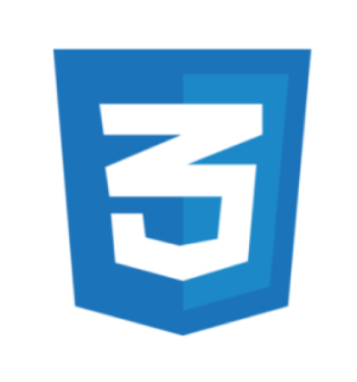
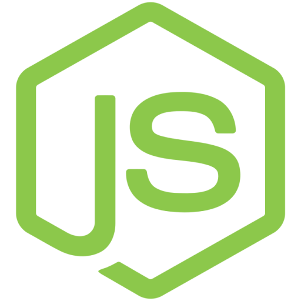
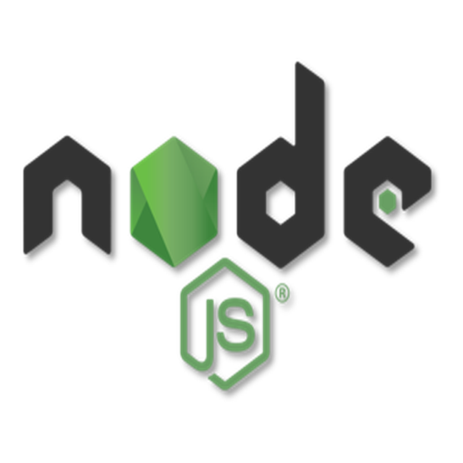
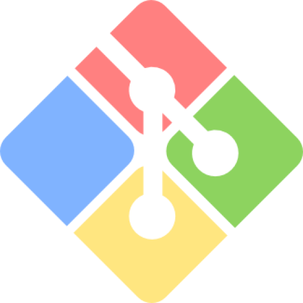
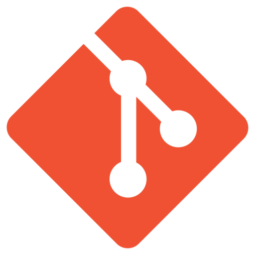
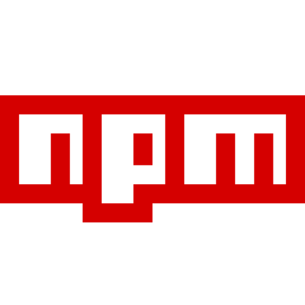
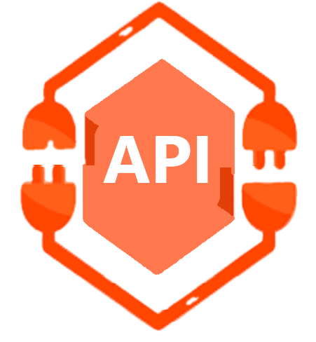
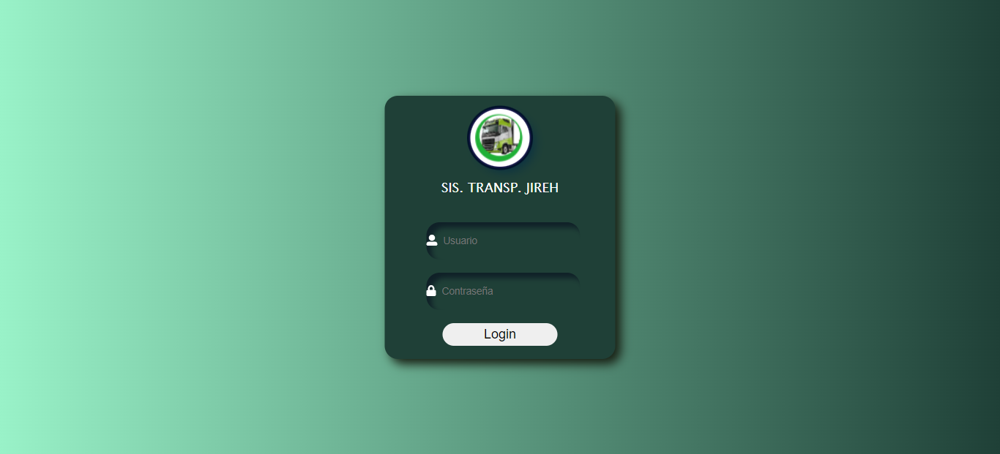
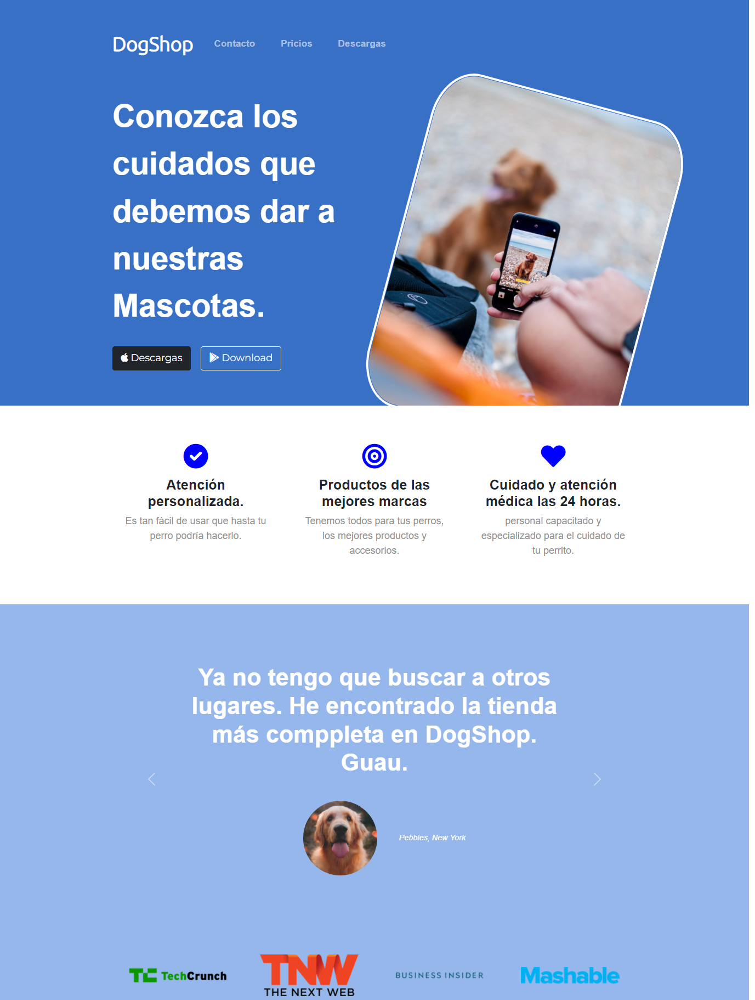
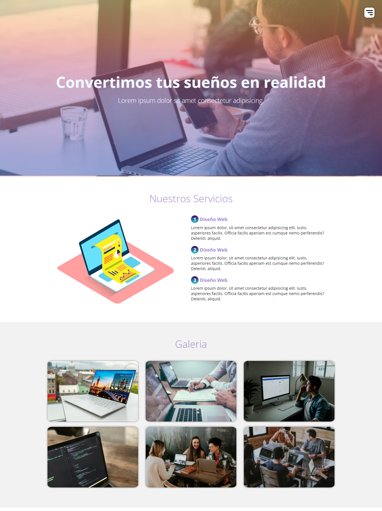

Comence como Implementador en WordPress, en le diseño de páginas Web (Landing Page, One Page, Páginas Básicas, Páginas Corporativas y tiendas Online) desde hace dos (05) años. Actualmente he realizado algunos proyectos personales y de practicas como parte de mi formacion como Fronted Developer, tengo un (02) año de experiencia en programación web, en la que he adquirido conocimientos en HTM, CSS y en el Disño poseo habilidades en PhotoShop y Figma, lo que me ha permitido complementar mi experiencia.
Actualmente estoy incursionando en el desarrollo utilizando nuevas tecnologías como JavaScript, Nod, React, manejo de Bases de datos como MongoDB, Web3 DApps,.

Este proyecto representa una propuesta para un Login que permitiera el acceso a los usuarios a un software administrativo, está realizado utilizando HTML5 y CSS3, la ubicación de los elementos esta realizada solo con coordenadas en PX y posicionamiento absoluto para poder ubicar el resto de los elementos.

Proyecto Página Web Onepage estática para servicios de mascotas. Utilicé HTML5, CSS3, la distribución de las cards está hecha utilizando las propiedades de rejilla que permite tener diseño responsivo, y como aporte particular el diseño de la imagen principal fue optimizado y redimensionado en Photoshop.

Desarrollo de Página Web, es el primer prototipo de página con menú interactivo de hamburguesa. El menú funciona con una pequeña función en JavaScript que permite llamar la acción de abrir y cerrar al menú. También utilicé gradientes y para el diseño de la galería de imágenes utilicé las propiedades de Flexbox.
Este pequeño juego es una representación de un juego al azar, tradicional en Venezuela, llamado "Piedra, papel o tijera". El juego consiste en que dos jugadores interactúen mediante el botón que actualiza el juego en tres oportunidades y en cada actualización las figuras van cambiando de manera aleatoria. El jugador que obtenga más victorias en los tres lanzamientos gana.
El juego está realizado bajo una lógica sencilla de condicionales utilizando funciones en JavaScript.
Este juego permite hacer una secuencia entre el sonido y los colores, es la representación del famoso juego "Simon Dice". La idea es seguir esa secuencia: el juego inicia con cualquier tecla, en ese momento indica el primer color y sonido, el jugador deberá repetir esa acción para incrementar el nivel de complejidad.
En el desarrollo utilicé un arreglo con los colores del juego, a los que les asocié un número y aplicando la función random consigo el color aleatorio.
Onepage estilo corporativo. La estructura HTML de este proyecto es bastante sencilla, apliqué la hoja de estilos de normalización y la hoja de CSS como archivos separados, también comencé a realizar el uso de las variables "custom properties" para generalizar algunas variables y utilicé las propiedades de grid para generar columnas en algunas secciones.
Este proyecto es uno de los más desarrollados que he tenido. Es un formulario Newsletter que utiliza el consumo de API de Mailchimp para solicitar los campos y enviar esos campos con nuevos datos, quedando guardados en su servidor. En el desarrollo utilicé HTML5, CSS3, Bootstrap para agregar estilos al formulario y en JavaScript creé las funciones para hacer las peticiones desde el HTML.

Este trabajo representa el último modelo de portafolio. Posee una mejor estructura que el anterior: he utilizado para la mayoría de las animaciones CSS3 y para la sección de ventanas modales utilicé JavaScript puro para mayor compatibilidad con GitHub Pages.
Este trabajo representa el desarrollo de una página Web para agencias de desarrollo web y marketing. Es uno de los trabajos más completos que he realizado en relación al maquetado y al uso de CSS.